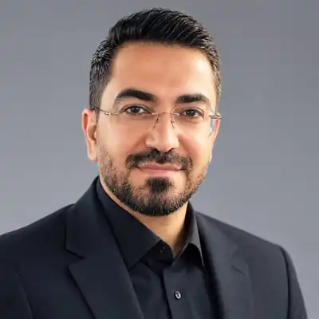

یادگیری و آموزش زبان
پژوهش درباره آموزش زبان انگلیسی، توانش زبانآموز، روانی و شواهد آموزشی.
مدرس دانشگاه · پژوهشگر · نویسنده · مشاور آموزشی
ادراک ندانستن سرآغاز فهمیدن است.
فعالیت علمی و حرفهای دکتر رضازاده آموزش عالی، آموزش زبان، ارزیابی، مواد آموزشی، استعدادیابی و هدایت تحصیلی را به یکدیگر پیوند میدهد تا تصمیمهای آموزشی بر شواهد، بافت زندگی فرد و قضاوت حرفهای استوار شوند.

پیشنهادهای ویژه · ۱۵ مسیر واقعی
۱۵ مقصد واقعی در آموزش، پژوهش، خدمات، کتاب و حمایت از استعدادها. هر کارت شما را مستقیماً به صفحه توضیحات همان بخش میبرد.
 GOLDEN TALENTاستعداد فقط یک نمره نیستبا چارچوب رشدمحور Golden Talent آشنا شوید؛ شواهد، زمینه و فرصتهای یادگیری را در کنار هم ببینید.آشنایی با مسیر طلایی استعداد
GOLDEN TALENTاستعداد فقط یک نمره نیستبا چارچوب رشدمحور Golden Talent آشنا شوید؛ شواهد، زمینه و فرصتهای یادگیری را در کنار هم ببینید.آشنایی با مسیر طلایی استعداداز شناخت بهتر تا انتخاب و مشاوره مسئولانه
 راهنمای انتخاب رشتهتصمیم بزرگ، شواهد روشنعلاقه، شرایط زندگی و گزینههای تحصیلی را پیش از تصمیم مقایسه کنید.بررسی مسیرها
راهنمای انتخاب رشتهتصمیم بزرگ، شواهد روشنعلاقه، شرایط زندگی و گزینههای تحصیلی را پیش از تصمیم مقایسه کنید.بررسی مسیرها RCAS · BAHARاز شناخت تا بازنگری مسیربا مبانی و محدودیتهای علمی اجزای اکوسیستم استعداد آشنا شوید.مطالعه روششناسی
RCAS · BAHARاز شناخت تا بازنگری مسیربا مبانی و محدودیتهای علمی اجزای اکوسیستم استعداد آشنا شوید.مطالعه روششناسی مشاوره تحصیلیاز سؤال درست شروع کنیدمسئله، هدفها و محدودیتهای خود را برای یک گفتوگوی تخصصی روشنتر کنید.مسیر مشاوره
مشاوره تحصیلیاز سؤال درست شروع کنیدمسئله، هدفها و محدودیتهای خود را برای یک گفتوگوی تخصصی روشنتر کنید.مسیر مشاوره برای خانوادههاتصمیمهای مهم را تنها نگیریدمشاوره مشترک دانشآموز و والد با توجه به واقعیتهای خانواده.مشاهده خدمت
برای خانوادههاتصمیمهای مهم را تنها نگیریدمشاوره مشترک دانشآموز و والد با توجه به واقعیتهای خانواده.مشاهده خدمت مشاوره کنکوربرنامهریزی، بدون وعده قطعیوضعیت موجود و برنامه مطالعه را با نگاهی واقعبینانه بررسی کنید.مشاوره کنکور
مشاوره کنکوربرنامهریزی، بدون وعده قطعیوضعیت موجود و برنامه مطالعه را با نگاهی واقعبینانه بررسی کنید.مشاوره کنکورمسیرهای روشن برای پژوهشگر، معلم و سازمان
 خدمات پژوهشیاز پرسش تا مقالهمشاوره پژوهشی، ارزیابی طرح و تصمیمهای مربوط به نگارش دانشگاهی.خدمات پژوهشی
خدمات پژوهشیاز پرسش تا مقالهمشاوره پژوهشی، ارزیابی طرح و تصمیمهای مربوط به نگارش دانشگاهی.خدمات پژوهشی ویرایش دانشگاهیپیش از ارسال، دقیقتر ببینیددامنه و تعهدات خدمت ویرایش آکادمیک انگلیسی را بررسی کنید.مشاهده جزئیات
ویرایش دانشگاهیپیش از ارسال، دقیقتر ببینیددامنه و تعهدات خدمت ویرایش آکادمیک انگلیسی را بررسی کنید.مشاهده جزئیات توسعه حرفهای معلمیادگیری حرفهای با شواهدطراحی، بازنگری و گفتوگو درباره تدریس و سنجش.خدمات معلمان
توسعه حرفهای معلمیادگیری حرفهای با شواهدطراحی، بازنگری و گفتوگو درباره تدریس و سنجش.خدمات معلمان همکاری سازمانیراهکارهای متناسب با مدرسه و مؤسسهفرصتهای مشاوره، پژوهش و آموزش حرفهای برای سازمانها.مسیر همکاری
همکاری سازمانیراهکارهای متناسب با مدرسه و مؤسسهفرصتهای مشاوره، پژوهش و آموزش حرفهای برای سازمانها.مسیر همکاری آموزش زبانزبان را با فهم عمیقتر بیاموزیمآموزش زبان، مواد آموزشی و نقش فناوری در یادگیری را کشف کنید.آموزش زبان
آموزش زبانزبان را با فهم عمیقتر بیاموزیمآموزش زبان، مواد آموزشی و نقش فناوری در یادگیری را کشف کنید.آموزش زباناز خواندن و پژوهش تا حمایت از استعدادها
 فروشگاه کتابکتابهایی برای مطالعه و رشدآثار علمی و ادبی را ببینید؛ شرایط خرید و تحویل را پیش از پرداخت بررسی کنید.ورود به فروشگاه
فروشگاه کتابکتابهایی برای مطالعه و رشدآثار علمی و ادبی را ببینید؛ شرایط خرید و تحویل را پیش از پرداخت بررسی کنید.ورود به فروشگاه مجله JHELAزیستبوم نشر علمی مسئولانهبا اهداف، دامنه و مسیر توسعه مجله آشنا شوید؛ اطلاعات منتشرشده را بررسی کنید.آشنایی با مجله
مجله JHELAزیستبوم نشر علمی مسئولانهبا اهداف، دامنه و مسیر توسعه مجله آشنا شوید؛ اطلاعات منتشرشده را بررسی کنید.آشنایی با مجله اخبار و مقالههاتازههای پژوهش و آموزشگزارشها، نوشتهها و اطلاعیههای علمی را در یک مسیر دنبال کنید.مطالعه مطالب
اخبار و مقالههاتازههای پژوهش و آموزشگزارشها، نوشتهها و اطلاعیههای علمی را در یک مسیر دنبال کنید.مطالعه مطالب حمایت از استعدادهافرصت رشد، نه فقط کمک مالیهدفها و سازوکار حمایت از دانشآموزان مستعد کمبرخوردار را بخوانید.آشنایی با حمایت
حمایت از استعدادهافرصت رشد، نه فقط کمک مالیهدفها و سازوکار حمایت از دانشآموزان مستعد کمبرخوردار را بخوانید.آشنایی با حمایتاطلاعات و شرایط هر خدمت در صفحه اختصاصی آن ارائه شده است؛ معرفی بنر به معنای تضمین نتیجه یا تأیید علمی مستقل نیست.
مسیر مناسب شما
همه کاربران با یک مسئله وارد سایت نمیشوند. مسیر دانشآموز و والد با مسیر پژوهشگر، معلم یا مؤسسه متفاوت است؛ بنابراین از همین ابتدا باید نقطه ورود و اقدام بعدی روشن باشد.
تجربه تعاملی · تصمیم آموزشی
در انتخاب رشته، هر اطلاعاتی به یک اندازه تعیینکننده نیست. استودیوی تعاملی کمک میکند علاقه، ضوابط ورود، هزینه، شرایط زندگی و امکان بازنگری را جداگانه بررسی کنید؛ اهمیت معیارها را تغییر دهید و ببینید چگونه برداشت اولیه از گزینهها تغییر میکند.
ورود به استودیوی انتخاب رشتهبدون ثبتنام، بدون ذخیره پاسخها و بدون ادعای تشخیص استعداد یا پیشبینی قبولی.
گزینههایی را انتخاب کنید که واقعاً درباره آنها تصمیم دارید.
اهمیت پنج معیار را با توجه به شرایط خود تنظیم کنید.
خروجی فقط بازتاب قضاوتهای ثبتشده شماست.
ضوابط رسمی، تجربه کوتاه و پرسشهای بیپاسخ را دنبال کنید.
درباره دکتر رضازاده
دکتر جواد رضازاده یزدلی مدرس دانشگاه، پژوهشگر آموزش و مشاور آموزشی است. زبانشناسی کاربردی (Applied Linguistics) یکی از محورهای اصلی فعالیت علمی و حرفهای اوست و در کنار آموزش زبان، سنجش و ارزشیابی، برنامه و مواد آموزشی، پژوهشهای آمیخته، فناوری و هوش مصنوعی در آموزش، هدایت تحصیلی و استعدادیابی دنبال میشود.
در رویکرد حرفهای دکتر رضازاده یزدلی، این حوزهها عنوانهایی مستقل و بیارتباط نیستند؛ مسئله اصلی آن است که شواهد چگونه در بافت واقعی زندگی و یادگیری انسان به قضاوت و تصمیمی مسئولانهتر تبدیل میشوند.
فلسفه آموزشی دکتر رضازاده
متن فلسفه آموزشی دکتر جواد رضازاده یزدلی، برگرفته از کتاب «کشف مسیر طلایی استعداد»؛ درباره انسان، استعداد، تلاش، اخلاق، خانواده، معلم، مشاور و معنای واقعی یادگیری.
این فلسفه بر تمایز میان شناختِ وضعیت کنونی و داوری قطعی درباره آینده انسان تأکید دارد. در چارچوب Golden Talent، توانایی، علاقه، تجربه، بازخورد و فرصتهای آموزشی در ارتباط با یکدیگر تفسیر میشوند و RCAS، BAHAR و Golden Path سه بخش از یک مسیر پیوستهاند: فهم شواهد، تبدیل شناخت به عمل و بازبینی فرضیههای مسیر تحصیلی. از این منظر، مسئولیت معلم و مشاور صرفاً تشخیص یا توصیه نیست؛ فراهمکردن شرایطی است که یادگیرنده بتواند با حفظ کرامت و استقلال، تصمیم آگاهانهتری بگیرد. مبانی نظری Golden Talent و حدود علمی و روششناختی آن در صفحات اختصاصی توضیح داده شدهاند.
برنامه پژوهشی
پژوهش درباره آموزش زبان انگلیسی، توانش زبانآموز، روانی و شواهد آموزشی.
بررسی آمیخته تناسب فرهنگی و آموزشی مواد در بافت واقعی یادگیری.
پژوهش درباره کیفیت سنجش، تفسیر شواهد و تصمیمگیری مسئولانه آموزشی.
رویکردی پژوهشمحور به شناسایی و پرورش استعداد، بدون تقلیل انسان به یک نمره یا آزمون منفرد.
خدمات آموزشی و مشاورهای
مشاوره از مسئله واقعی فرد آغاز میشود: گاهی انتخاب رشته است، گاهی برنامه کنکور، گاهی فهم بهتر یک کارنامه و گاهی پرسشی بنیادیتر درباره استعداد و مسیر رشد. پاسخ قرار نیست برای همه یکسان باشد.
تحلیل وضعیت، هدفها و تصمیمهای آموزشی بر پایه شواهد و شرایط واقعی فرد.
02مقایسه مسئولانه گزینهها با توجه به رتبه، علاقه، توان، شرایط و آینده.
03شناخت چندمنبعی توانمندیها و ظرفیتهای رشد، فراتر از یک تست و یک برچسب.
04برنامهریزی، پایش عملکرد، مدیریت فشار و بازطراحی مسیر بدون وعدههای غیرواقعی.
05تبدیل عددها به پرسشهای آموزشی و تصمیمهای قابل استفاده.
06همراهی با خانواده برای حمایت از تصمیم فرزند، بدون مقایسه و فشار فرساینده.
اخبار، راهنماها و یادداشتها
اخبار و مطالب این بخش با همان منطق خدمات سایت نوشته میشوند: اطلاعات درست، توضیح کافی، پیوند با منبع رسمی در موضوعات سالمحور و پرهیز از نسخههای ساده برای مسئلههای پیچیده.

مشاوره تحصیلی
چرا مشاوره خوب باید قدرت تصمیمگیری فرد را افزایش دهد، نه اینکه جای او تصمیم بگیرد؟

انتخاب رشته ۱۴۰۵
رتبه، علاقه، توان، شرایط زندگی و اطلاعات رسمی چگونه کنار هم قرار میگیرند؟

فراخوان علمی
دعوت از پژوهشگران و اعضای هیئت علمی برای شبکه داوری و همکاری علمی مؤسس.
نقشه خدمات و مسیر شما
برای شروع، مسیر مناسب خود را انتخاب کنید. هر خدمت هدف، مراحل و خروجی مشخصی دارد؛ هیچ آزمونی بهتنهایی سرنوشت تحصیلی یا شغلی شما را تعیین نمیکند.
استعدادیابی چندمنبعی، شناخت علایق و بررسی زمینه رشد.
آشنایی با استعدادیابی ←Golden Talent؛ پیوند یافتهها با هدفگذاری و اقدامهای قابل پیگیری.
مشاهده مسیر استعداد ←بررسی گزینهها و انتخاب خدمت متناسب با شرایط فردی.
درخواست مشاوره ←کتابها و منابع تکمیلی برای یادگیری و ادامه مسیر.
ورود به فروشگاه ←مسیرها پیشنهادیاند؛ میتوانید از هر مرحله متناسب با نیاز خود شروع کنید. ارائه خدمات و پرداخت تابع وضعیت فعال هر خدمت است.
ارتباط
مکاتبات رسمی و پیگیری خدمات فقط از طریق ایمیل انجام میشود.